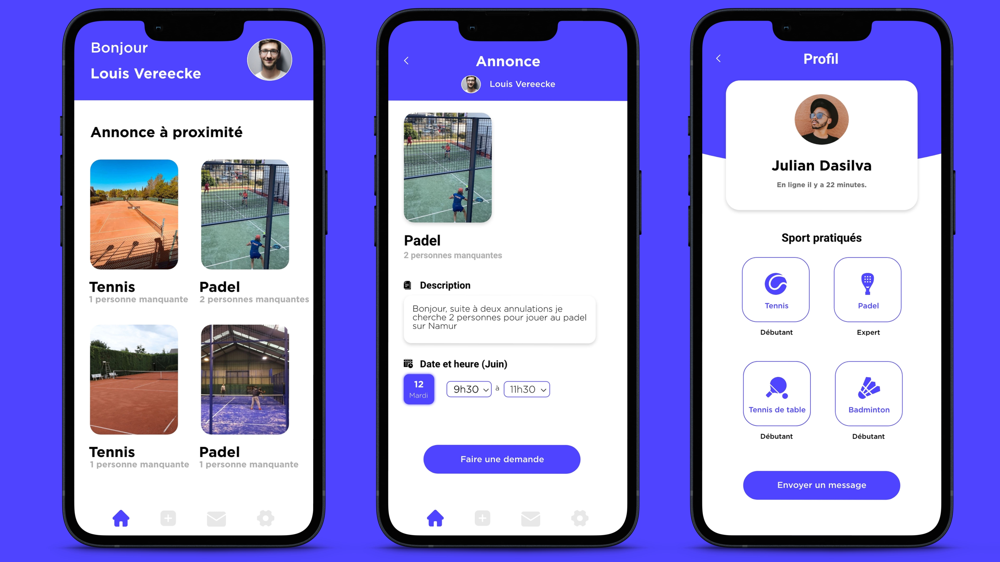

Le travail de fin d’année de l’option Design web et mobile de la haute école Albert Jacquard consiste en la création d’un service. Nous devons imaginer une charte graphique, trouver un nom, réaliser le site web de ce service et pour finir nous devons créer un prototype utilisable. J’ai décidé de créer un service (application mobile) dans la thématique du sport.
Je fais beaucoup de sport depuis que je suis petit, notamment des sports de raquette comme le tennis, le padel, ou encore le tennis de table. Le problème que je rencontre le plus est le fait de devoir trouver un partenaire ou des partenaires de jeu disponible et ayant mon niveau pour pouvoir jouer avec moi. J’ai donc décidé de créer une application permettant de mettre en relation une personne qui recherche quelqu’un pour jouer et une personne étant libre pour jouer.
La première étape de ce genre de projet est d’en apprendre un peu plus sur son public cible, Faisant moi même partie de ce public cible, j’ai pu facilement interroger des personnes ayant la même problématique. Pour ça, j’ai mis en place des interviews découvertes avec plusieurs personnes.
Les personnes que j’ai interrogées utilisent Facebook pour trouver un partenaire de jeu. Ils postent une annonce demandant si quelqu’un est disponible pour jouer avec eux. Le premier problème c’est que le taux de réponse à ces publications est presque nulle car elles sont noyées dans la masse de publications de Facebook. Le deuxième problème c’est que quand ils ont une réponse à leur publication, elle arrive beaucoup trop tard et donc l’annonce n’est plus valable.
Une application mobile permettant de planifier une session de sport avec des coéquipiers de qualité. En entrant sur l’application, vous renseignez les sports que vous pratiquez, votre niveau dans chaque sport. Ensuite, vous pouvez vous même poster une annonce pour planifier une session de sport ou alors répondre à des annonces déjà existantes.
Un User Journey se concentre sur le design de l'expérience utilisateur, sur la manière dont l’utilisateur découvre un produit (dans notre cas une app), jusqu’à l’instant où il atteint l’objectif poursuivi. On imagine plusieurs scénarios différents d’interaction entre notre produit et un utilisateur.
Le test utilisateur consiste à observer le comportement et les interactions qu'un utilisateur test adopte avec un produit donné. Après avoir fait tester mon prototype à plusieurs personnes, j’ai changé beaucoup de choses
Pour conclure, j’ai trouvé ce TFA très enrichissant à réaliser. J'ai bien apprécié la collaboration avec mon publique cible. Cela m’a permis de concevoir une application qui répondait vraiment aux besoins des utilisateurs.